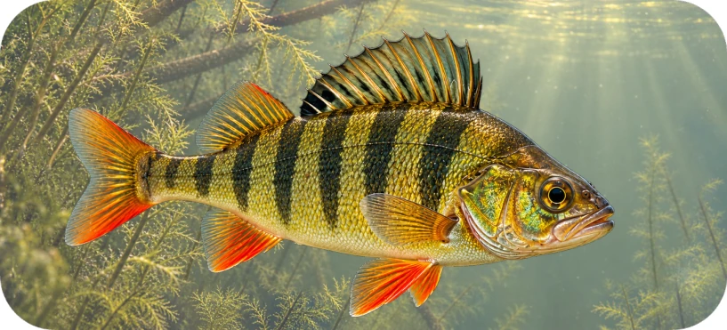
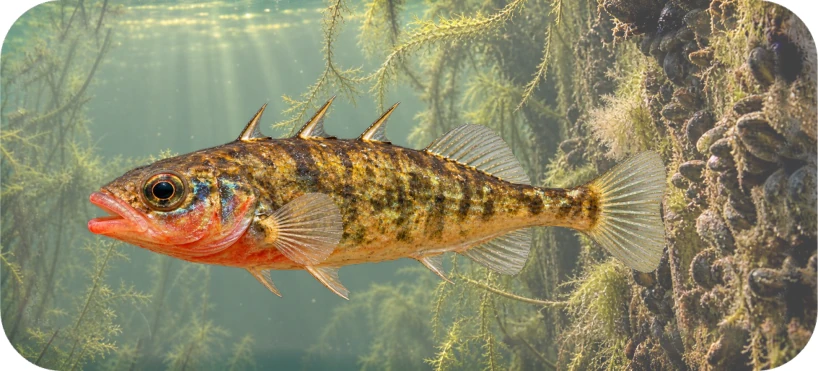
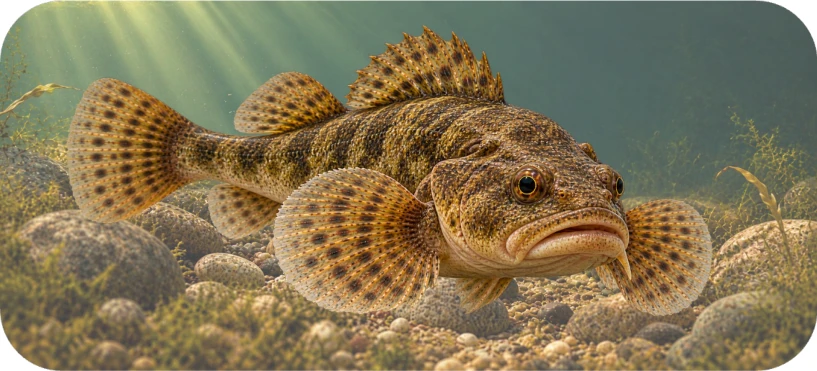
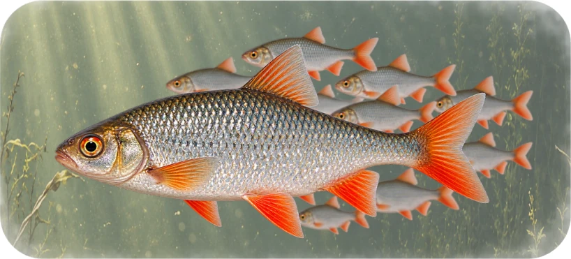
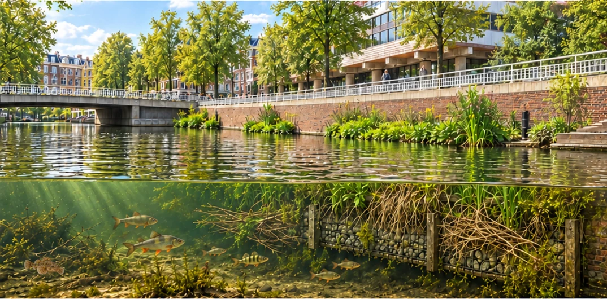

FINALIST 01
Percia the Perch
Striking looks. Sneaky moves.
My stripes aren't just a fashion statement! They help me hide among water plants, so I can sneak up on my next meal. Looking fabulous without being noticed!
Four fish. Four personalities. One honorary host of the Fish Hotel. Get to know the neighbours beneath Amsterdam's canals, then choose your favourite.

Each of these canal neighbours has their own story. Who deserves the crown?
Striking looks. Sneaky moves.
My stripes aren't just a fashion statement! They help me hide among water plants, so I can sneak up on my next meal. Looking fabulous without being noticed!

FINALIST 02Small fish. Big attitude.
These lips? No fillers. Pure nature. And my spines? Gorgeous and useful. When a bigger fish tries to eat me, my spines go up. Try swallowing that, darling!

FINALIST 03Beautiful on my own terms.
They called me Bella for a reason. My beautiful face! I hide among stones by day and hunt at night. Beauty sleep? No need! I have dinner plans.

FINALIST 04Why shine alone?!
Silver is my signature look! I am popular and always swim with lots of friends. Hungry fish gets confused with us. More sparkle. More safety.

The Green Mile's EcoWal makes space for aquatic life along Amsterdam's canal walls. Its habitat structures offer hiding places and shelter beneath the surface.
ShelterFor fish and other aquatic life
HabitatMore places for canal nature
These are fish found in Amsterdam's canals; the poster does not claim each species has been observed at this particular EcoWal.
Choose your favourite canal character and help crown the honorary host of the Fish Hotel.
Your vote has been recorded. Thanks for meeting Amsterdam's underwater neighbours!
Results are unlocked after voting. See who's currently leading!